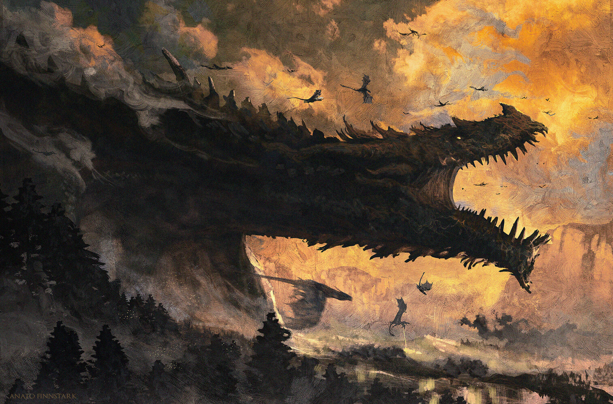

Welcome to the Archives
Hello! My name is Kay, and this website is dedicated to archiving the characters I've played in my Dungeons & Dragons Fifth Edition games. This page will give you a brief overview of each section of the site, all of which can be reached via the navigation bar at the top. The link for the Great Hall will take you back to this page, which has links to a couple useful character creation resources at the bottom.
Hafwen's Tale is all about my warlock, Hafwen Kendrick. A human princess who made a poorly thought-out bargain with a vampire, she was the first character I played with my current game group. Her page includes her character sheet and a short summary about both her as a character and of my time playing her.
Vetteia's Journey covers the character I'm playing in my current D&D game, the cleric Pentavetteia Nevedrian. Playing her has been quite an interesting experience, as she's a four-inch tall fairy in a somewhat unconventional relationship with a pair of elves. Fifth edition has no rules for playing a character her size, and it's been a lot of fun to figure out! Like Hafwen, her page contains her character sheet and a short discussion about her.
The Songs of Other Worlds describe a few characters I've played in shorter games, usually lasting one to three sessions. These characters have little-to-no developed background, unlike my two main campaign characters, but were still fun to play and let me try out different classes and fantasy species that I hadn't yet had a chance to. They include the paladin Deirdre Tarmlock, the monk Finnabair, and the bard Nadezhda Karovka. This page features the character sheets for each, excluding the roleplay elements, as well as an overview of the characters.
The Diviners' Wing hosts some of my ideas for future characters. Though only a few of my characters are archived on this site, I've actually played every class in D&D Fifth Edition at least once. Thus, each entry on this page is based on a concept I've had or an ability combination I've read that intrigues me. This page doesn't have character sheets or a tonne of detail - these are only rough ideas of some things I might like to try eventually.
Want to get into Dungeons & Dragons? I hope my characters inspire you! A good introduction would be to read the 2024 D&D Free Rules at D&D Beyond. Once you have a grasp of the mechanics, the D&D 5e 2024 Wiki contains all the character options found in the Players' Handbook. Finally, while the character sheet I use is one I customized myself, there are form-fillable PDFs of both the 2014 sheet and the 2024 sheet available to download. Have fun!
